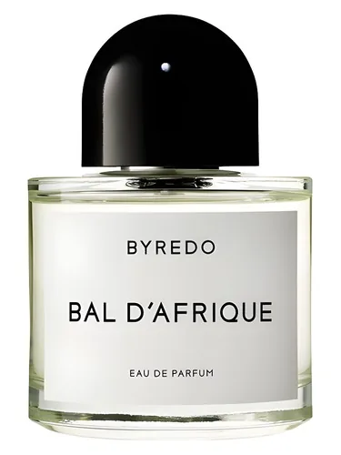

Bal d'Afrique
- Unisex
- Familia aromática
- Lanzado en 2009
Con caja$2,500Te lo conseguimos en 2 días a 1 semanaSin caja$950Te lo conseguimos en 2 días a 1 semana
No disponible: te lo conseguimos en 2 días a 1 semana
Cómo huele
Aromático
Cítrico
Amaderado
Floral
Especiado fresco
Sus notas
Salida
limón de Amalfitagetesgrosella negrabergamotaflor de naranjo africana
Corazón
violetaciclamenjazmín
Fondo
vetiveralmizcleámbarcedro de Virginia
Bal d'Afrique de Byredo es un perfume aromático para mujer y hombre, lanzado en 2009. Abre con limón de Amalfi y tagetes, en el corazón tiene violeta y ciclamen y deja un fondo de vetiver y almizcle. Lo que más se siente: aromático, cítrico y amaderado.